Huevat · H4c
Give a figure a clearer voice.
Inspect the existing plot. Compare three color, marker and dash choices. Preview on a copy. Apply only when you choose.
Repeated labels keep their identity across panels, including when categories are reordered or absent. The selected Clearer palette remains the starting point.
from huevat import doctor
scene = doctor.inspect(fig)
closer, separation, simple = doctor.propose(scene)
copy = doctor.preview(fig, separation)
change = doctor.apply(fig, separation) # explicit edit
change.undo()
Light background
 Before · ambiguous colors
Before · ambiguous colors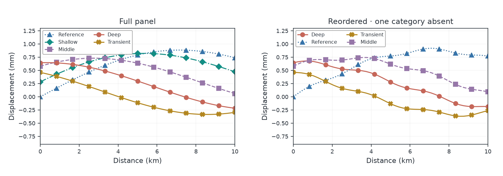
Closer · retain the original feel Separation · prioritize crossings
Separation · prioritize crossings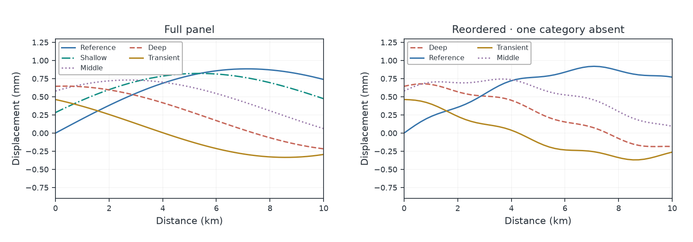
Simple · fewer extra encodingsReview the actual figure under simulated conditions
Locked identical colors: color screen still fails
Distinct markers and dashes help track labels. The failed color-only result remains a failure.
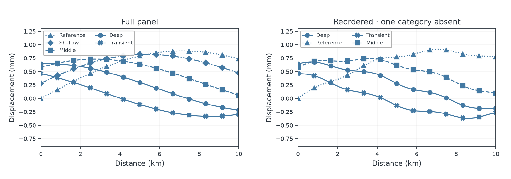
Mixed content: bands and colorbar preserved
This is partial coverage: uncertainty bands, scalar maps and colorbars are retained and excluded from the mark-color screen.
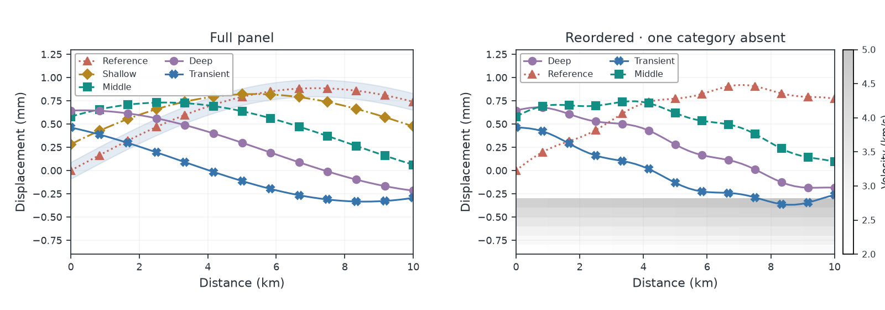
Native UltraPlot preview
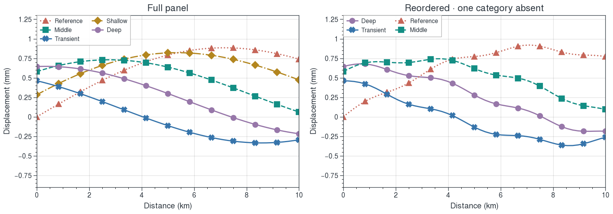
Dark background
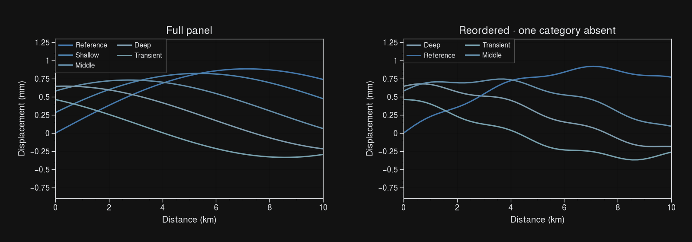
Before · ambiguous colors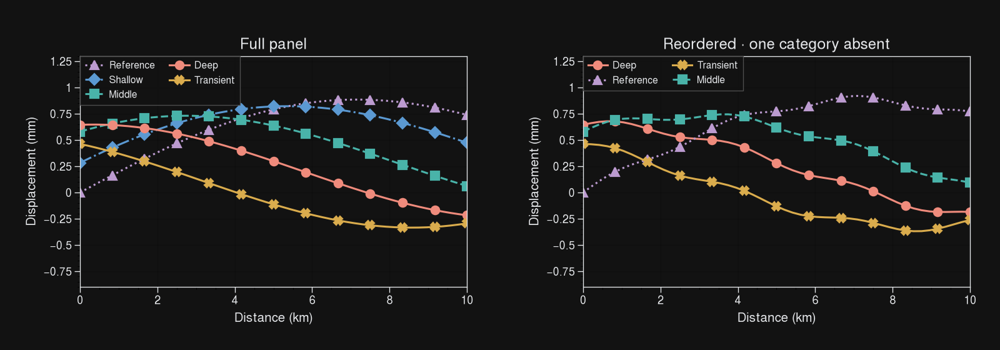
Closer · retain the original feel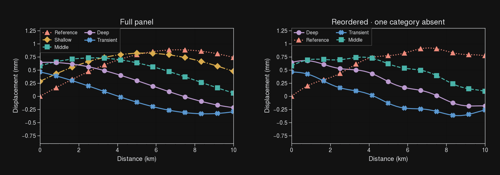
Separation · prioritize crossings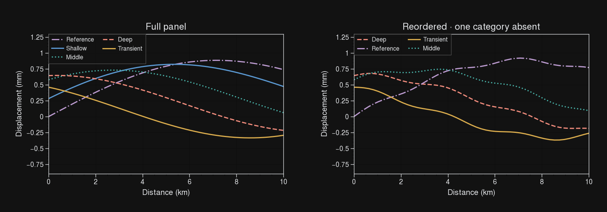
Simple · fewer extra encodingsReview the actual figure under simulated conditions
Locked identical colors: color screen still fails
Distinct markers and dashes help track labels. The failed color-only result remains a failure.
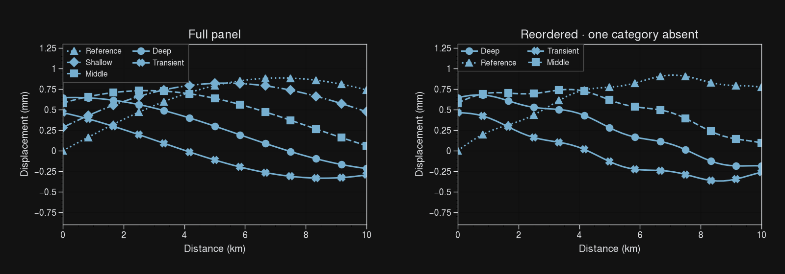
Mixed content: bands and colorbar preserved
This is partial coverage: uncertainty bands, scalar maps and colorbars are retained and excluded from the mark-color screen.
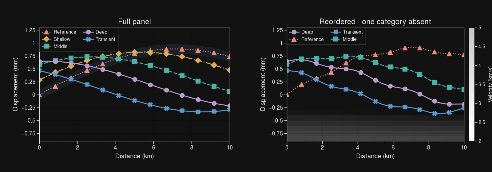
Native UltraPlot preview
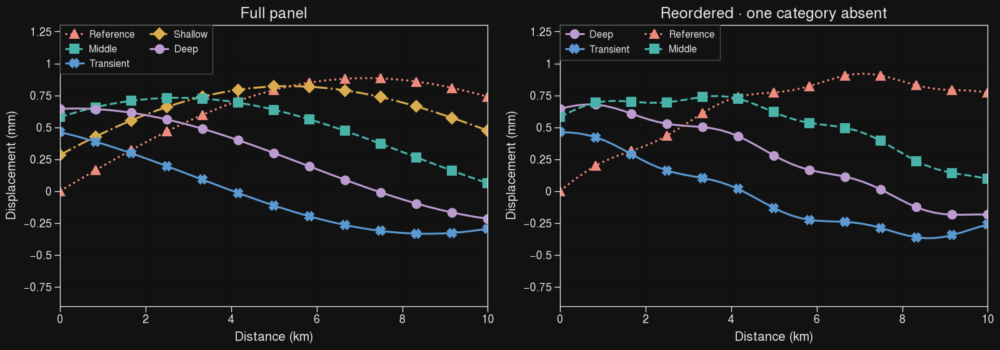
Use your own constraints
options = doctor.propose(scene, locked={"Reference": {"color": "#4379a3"}})
next_options = doctor.propose(next_scene, assignments=options[0].assignments)
saved = options[0].to_json()
restored = doctor.load_proposal(saved)
Retained assignments reserve absent categories. Hard locks remain exact, including when they cause a failed screen. Data, units, axis scales, physical limits and scalar color mappings are preserved.